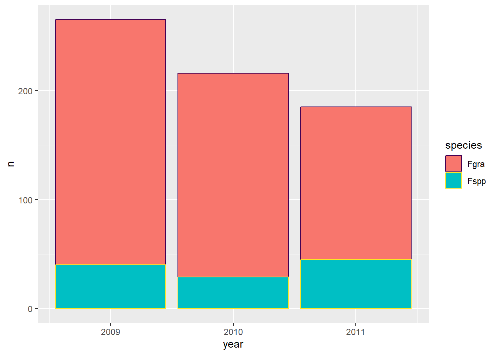
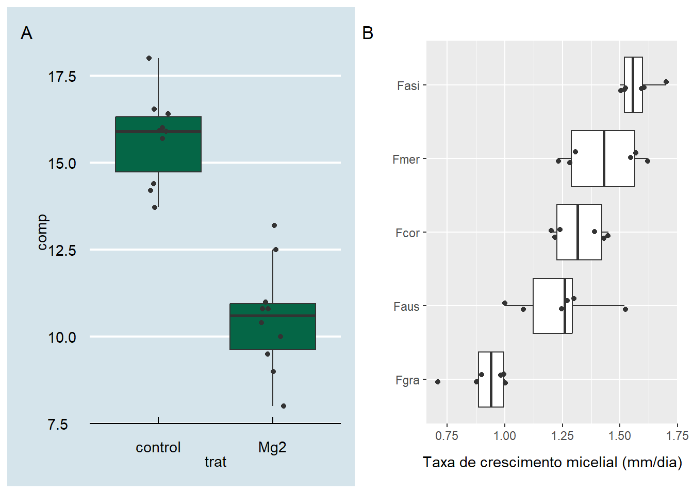

install.packages("janitor")
install.packages("patchwork")Gráficos
Construindo gráficos e filtrando dados
Pacotes que ainda não foram usados neste site e precisam ser instalados
Exemplo 1
# Carrega os pacotes necessários
library(gsheet) # Para importar dados diretamente do Google Sheets
library(dplyr) # Para manipulação de dados (filtrar, agrupar, etc.)
library(ggplot2) # Para criar gráficos
library(janitor) # Para limpeza de dados e funções úteis, como tabyl()
# Importa os dados de uma planilha do Google Sheets
survey <- gsheet2tbl("https://docs.google.com/spreadsheets/d/1bq2N19DcZdtax2fQW9OHSGMR0X2__Z9T/edit?gid=1118819738#gid=1118819738")
# Visualiza os dados importados
View(survey)
# Exemplo de agrupamento e contagem usando 'group_by()' e 'count()':
survey |>
group_by(state, residue) |> # Agrupa os dados pelas colunas 'state' (estado) e 'residue' (resíduo)
count() # Conta o número de ocorrências em cada grupo
# Filtra os dados para o estado "RS" (Rio Grande do Sul)
RS <- survey |>
filter(state == "RS")
View(RS) # Exibe os dados filtrados para o estado "RS"
# Filtra os dados para o estado "PR" (Paraná)
PR <- survey |>
filter(state == "PR")
View(PR) # Exibe os dados filtrados para o estado "PR"
# Combina os dados de "RS" e "PR" em um único data frame usando 'rbind()'
combinado <- rbind(RS, PR)
# Seleciona apenas as colunas 'year', 'state' e 'species' para análise
survey_b <- survey |>
select(year, state, species) # Retorna apenas as colunas de interesse
View(survey_b) # Exibe o data frame 'survey_b'
# Usando a função 'tabyl()' do pacote 'janitor' para criar uma tabela cruzada
survey_b |>
tabyl(year, species) # Contagem de ocorrências para cada combinação de 'year' (ano) e 'species' (espécie)
# Agrupa os dados por 'year' (ano) e 'species' (espécie), e conta as ocorrências de cada grupo
survey_b |>
group_by(year, species) |>
count() |> # Conta o número de ocorrências por grupo
# Cria um gráfico com 'ggplot2'
ggplot(aes(year, n, fill = species, color = species)) +
geom_col() + # Cria um gráfico de barras (geom_col) para representar a contagem
scale_colour_viridis_d() # Aplica a paleta de cores 'viridis' para as espécies
A função filter() permite extrair dados específicos para uma análise mais focada.
A função select() é usada para escolher apenas as colunas desejadas do data frame.
A função rbind() é usada para combinar dois data frames (ou mais) com a mesma estrutura de colunas, empilhando-os um em cima do outro.
O aes() mapeia as variáveis de seu data frame para os atributos estéticos do gráfico. No caso de um gráfico de barras, por exemplo, isso pode resultar em barras de diferentes cores para cada espécie, com a altura das barras representando a variável n e o eixo X sendo preenchido pela variável year.
As barras ou pontos terão um preenchimento de cor diferente dependendo da espécie (com fill = species).A borda das barras ou pontos também será colorida com base na espécie (com color = species).
Exemplo 2
mg2 <- gsheet2tbl("https://docs.google.com/spreadsheets/d/1bq2N19DcZdtax2fQW9OHSGMR0X2__Z9T/edit?gid=983033137#gid=983033137")
# Carrega o pacote ggthemes, que oferece temas adicionais e paletas de cores para personalizar gráficos
library(ggthemes)
# Criar o gráfico
plot_mg <- mg2 |>
ggplot(aes(trat, comp)) + # Define o gráfico base, com 'trat' no eixo X e 'comp' no eixo Y
geom_boxplot(fill = "#056646", outlier.colour = NA) + # Adiciona o boxplot com a cor de preenchimento definida
# Os outliers são escondidos (outlier.colour = NA)
geom_jitter(width = 0.1, color = "gray20") + # Adiciona pontos dispersos sobre o boxplot para mostrar a distribuição dos dados
# O parâmetro 'width = 0.1' aplica um pequeno deslocamento horizontal para evitar sobreposição dos pontos
# A cor dos pontos é definida como cinza escuro (gray20)
theme_economist()
plot_mg#você pode salvar seus gráfiso no formato que quiser.
ggsave("box.tiff", bg = "white", width = 5, height = 4) #também aceita em PNGA função geom_boxplot() é usada para criar um gráfico com boxplot.
A função geom_jitter() é usada para adicionar pontos dispersos ao gráfico, geralmente com um pequeno deslocamento horizontal (ou vertical) para evitar sobreposição de pontos.
"box.tiff": Este é o nome do arquivo de saída. O gráfico será salvo com o nome box.tiff e o formato de imagem será determinado pela extensão do nome do arquivo (no caso, .tiff), o que significa que o arquivo será salvo como um arquivo TIFF.
bg: Este parâmetro especifica a cor de fundo do gráfico gerado no arquivo, neste caso branco. Isso é útil quando você quer garantir que a imagem tenha um fundo branco, mesmo que o gráfico tenha sido criado com um fundo diferente (como theme_bw() ou theme_minimal()).
width: Este parâmetro define a largura do arquivo de imagem que será salvo.
height: Este parâmetro define a altura do arquivo de imagem que será salvo.
Você pode conferir diferentes temas que estão inseridos no pacote ggthemes em: https://r-graph-gallery.com/ggplot2-package.html#theme-widget
Exemplo 3
micelial <- gsheet2tbl("https://docs.google.com/spreadsheets/d/1bq2N19DcZdtax2fQW9OHSGMR0X2__Z9T/edit?gid=959387827#gid=959387827")
plot_micelial <- micelial |>
ggplot(aes(reorder(especie, tcm), tcm)) + # Reordena as categorias de 'especie' com base na variável 'tcm' (Taxa de Crescimento Micelial)
# Adiciona um boxplot para mostrar a distribuição dos dados, mas oculta os outliers
geom_boxplot(outlier.colour = NA) + # 'outlier.colour = NA' impede que os outliers sejam mostrados
# Adiciona pontos dispersos (jitter) para mostrar a distribuição individual dos dados
geom_jitter(width = 0.1, color = "gray20") + # 'width = 0.1' adiciona um pequeno deslocamento horizontal aos pontos
# Aplica o tema 'grey' do ggplot2, que é um tema mais simples e claro
theme_grey() + # 'theme_grey()' aplica um tema de fundo cinza e um estilo básico
# Inverte as coordenadas para ter as categorias no eixo Y e a variável 'tcm' no eixo X
coord_flip() + # 'coord_flip()' inverte os eixos X e Y para melhor visualização
# Define o rótulo para o eixo Y
labs(x = "", # O rótulo do eixo X será vazio
y = "Taxa de crescimento micelial (mm/dia)") # O rótulo do eixo Y descreve o que a variável 'tcm' representa
# Exibe o gráfico criado
print(plot_micelial) # Exibe o gráfico no RStudio ou em RMarkdownVocê pode salvar os dois gráficos como uma única imagem
Você pode usar o pacote patchwork para combinar os gráficos do exemplo 2 e 3.
library(patchwork)
#plot_mg + plot_micelial
#plot_mg / plot_micelial #plota um em cima do outro
(plot_mg | plot_micelial)+
plot_annotation(tag_levels= "A")
ggsave("combo.tiff", bg = "white", width = 8, height = 4)Atenção: as imagens serão salvas no diretório onde está salvo seu projeto.
Você pode conhecer mais e achar novas inpirações e funções do pacote ggplot em: https://r-graph-gallery.com/ggplot2-package.html